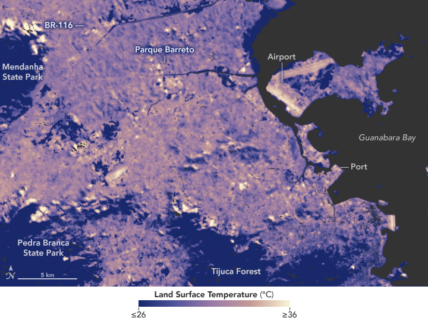

REMOTE SENSING × EVERYDAY LIFE
城市里的树荫，
公平吗？
公平吗？
从遥感图像看见城市里不容易被注意到的高温风险，以及它背后的“热不平等”。
课堂汇报演示稿示意数据约5分钟
🛰️
热红外
绿地
地表温度
正在扫描地表…
01 / 一个容易被忽略的问题
同样是夏天，为什么有人走在树荫下，
有人却一直走在“发烫的地面”上？
有人却一直走在“发烫的地面”上？
看不见
热风险藏在脚下
天气预报告诉我们空气温度，却很少告诉我们：不同街区的地面吸热程度差多少。
不平均
降温资源有差异
绿地、水体、树荫和遮阳设施，并不会平均分布在每个社区。
很重要
高温影响真实生活
老人、儿童、环卫工人和外卖骑手，往往更长时间暴露在高温环境中。
核心问题：城市的“降温资源”，是不是也应该被当作一种公共资源？
02 / 遥感能看见什么
把“体感很热”变成一张可以比较的地图
01 · 采集
卫星获取可见光、近红外和热红外信息。
02 · 识别
区分建筑、道路、植被、水体等地表类型。
03 · 反演
估算地表温度，得到热环境空间分布。
04 · 对比
叠加人口和公共设施，寻找被忽视的高风险区域。
三个关键指标
地表温度 LST
高温
植被指数 NDVI
偏低
不透水面比例
偏高
低高
为什么适合这个题目？
遥感的优势不是“拍一张漂亮的卫星图”，而是把分散、难以感知的城市差异，放在同一张图上比较。
大范围可重复可比较
03 / 一张示意遥感图
较凉中等较热绿地
绿地覆盖与热风险
调整绿地覆盖率，观察示意区域热风险的变化，理解"降温资源"与热风险的关系。
绿地覆盖率18%
72示意热风险指数 / 100
04 / 建模演示
从轨道到卫星视角
🛰️
⌾
轨道视角：18°
卫星任务控制台
通过调整轨道角度，让卫星进入观测窗口，获取目标区域的热红外影像。
等待调整轨道
当前轨道角度
卫星视角 / 热红外成像RIO DE JANEIRO · LAND SURFACE TEMPERATURE

真实遥感图：里约热内卢北部地表温度，NASA Earth Observatory，基于 ECOSTRESS 与 Landsat 数据。
查看 NASA 来源说明
查看 NASA 来源说明
读图方法：深蓝区域相对较凉，常对应森林、水体或大型绿地；浅紫、粉白区域相对较热，常对应机场、港口、高速路和密集建成区。图中显示的是地表温度，不等同于空气温度。
05 / 隐形差异
不是所有人，都拥有同样的“降温条件”
不同地区的热环境
选择地区查看真实遥感画面，点击当前画面展开解释。
正在载入遥感案例…
选择一张地区图像这里会显示地区、数据类型和讲解重点。
3D街区热量模型
立体街区中，柱子越高代表示意热风险越高。
正在准备 3D 街区模型…
06 / 为什么和我们有关
“热”会沿着城市空间，落到具体的人身上
影响人群
先看一张关系图
热风险不是一个抽象数字，它会沿着城市空间，落到具体的人身上。
空间暴露健康
当我们把热红外图像和人的日常路线叠在一起，一个原本“不显眼”的公共问题，就变得清晰了。
07 / 从地图到行动
遥感的价值，最后要回到城市怎么改变
三个可执行的方向
01
优先补树荫：在高温、高人流、低绿地的路段增加连续遮阳。
02
建立冷却节点：把口袋公园、饮水点、公共休息点布置在热风险高的区域。
03
持续监测：用多时相遥感图像观察改造后是否真的变凉。
我们真正想问的
一座“凉快”的城市，应该只靠个人寻找树荫，还是应该让每个人都更容易获得树荫？
技术问题公共治理日常生活
09 / 现场提问
常见问题
问题解答
选择一个问题
现场提问围绕数据可信度、遥感原理与应用价值展开。
10 / 结论
◎
看见温度差异，
也看见城市里的公平问题。
遥感让我们发现：有些重要的问题，并不会主动出现在视线里。它们需要被测量、被比较，然后被纳入城市决策。
谢谢聆听欢迎提问